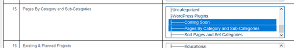

Sort Pages, Set Categories

Description
What It Does
Sort Pages Set Category is a WordPress plugin that allows you to set the order of your pages using drag-and-drop
and assign categories to the pages.
This plugin adds a menu item under the Appearance menu in the WordPress admin dashboard, where you can easily
reorder pages and save their order and category.
Features
- Drag-and-drop page sorting
- Assign categories (0 or more) to pages using multiple select
- Save the page order and categories with a single click
- Display pages in the saved order

Typical Listing
Item

Showing two categories assigned to
a
page
Installation
- Download the plugin files and upload them to your WordPress site\'s wp-content/plugins directory.
- Activate the plugin through the Plugins menu in WordPress.
— OR —
- In the admin menu, select Plugins, then click the Add Plugin button.
- A form will appear that will allow you to upload the zip file.
- Click the Browse button and select the file from your local drive.
- Once uploaded, you can Click on the Install button.
- The last step is to click on the Activate button.
How to uninstall the plugin?
Simply deactivate and delete the plugin.
Usage
- After activating the plugin, go to Appearance > Sort and Categorize Pages in the WordPress admin
dashboard.
- You will see a list of your pages. Drag and drop the rows to reorder the pages as desired.
- Use the category dropdown to assign a category to each page.
- Click the "Save Changes" button to save the order and categories.
Frequently Asked Questions
Q: I've changed the page order, but the changes aren't there when I open the maintenance page
again?
A: Be sure to click the Save Changes button at the bottom of the page
listing.
Q: How do I select categories for a page?
A:
To select and deselect multiple Categories, you can use specific keyboard and mouse combinations depending on
their operating system (Apple or PC). Here are the instructions for both:
Selecting Multiple Items
PC (Windows):
- Single Item Selection:
- Click on the item you want to select.
- Select Multiple Items:
- Contiguous Selection (items that are next to each other):
- Click on the first item you want to select.
- Hold down the Shift key.
- Click on the last item in the range. All items between the first and the last clicked items will
be selected.
- Non-Contiguous Selection (items that are not next to each other):
- Hold down the Ctrl key.
- Click on each item you want to select. You can click items in any order to add them to the
selection.
Apple (Mac):
- Single Item Selection:
- Click on the item you want to select.
- Select Multiple Items:
- Contiguous Selection:
- Click on the first item.
- Hold down the Shift key.
- Click on the last item in the range. All items between the first and last clicked items will be
selected.
- Non-Contiguous Selection:
- Hold down the Command (⌘) key.
- Click on each item you want to select. You can click items in any order to add them to the
selection.
De-selecting Items
PC (Windows):
- De-select a Single Item:
- If the item is part of a contiguous selection, hold down the Ctrl key and click on
the selected item to de-select it.
- De-select Multiple Items:
- Hold down the Ctrl key.
- Click on each selected item you want to de-select.
Apple (Mac):
- De-select a Single Item:
- Hold down the Command (⌘) key and click on the selected item to de-select it.
- De-select Multiple Items:
- Hold down the Command (⌘) key.
- Click on each selected item you want to de-select.
By following these steps, you can easily select and de-select a Category or multiple Categories on both Apple
and PC systems.
Upgrade Notice
Screenshots
- Page Listing, Main Admin Page
- Menu Location
- Save Button
Files
- sort-pages-set-cat.php
- This is the main plugin file that handles the functionality of the plugin. It registers the admin menu,
enqueues scripts and styles, displays the admin page, and defines the REST API endpoint for saving the
order
and categories.
- css/cstspp_styles.css
- This file contains the CSS styles for the plugin. It styles the table, order number, page title,
category
dropdown, and save button.
- js/cstspp_scripts.js
- This file contains the JavaScript for the plugin. It initializes the sortable functionality for the
table
rows,
collects the order and category data, and sends it to the REST API endpoint for saving.
Changelog
- 1.0